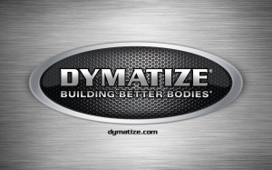
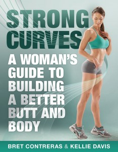
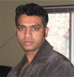
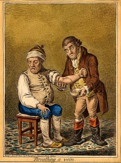
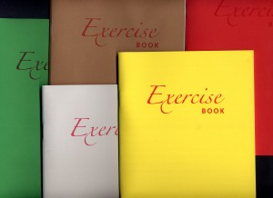

Progressive overload is a well-established principle for achieving continued progress in resistance training programs. In general terms, progressive overload can be defined as consistently challenging the neuromuscular system beyond its present capacity. It’s commonly accepted that this...
Brad Schoenfeld, Ph.D, C.S.C.S., is an internationally renowned fitness expert and widely regarded as one of the leading authorities on body composition training (muscle development and fat loss). He is a lifetime drug-free bodybuilder, and has won numerous natural bodybuilding titles.
We are glad that more and more people are demanding and applying evidence in the exercise and nutrition field. That been said, there remains a lot of misunderstanding and misconceptions about an evidence-based Practice (EBP). In this article, we will address some of the common misconceptions and criticisms of EBP. Here we go:
Why do we need EBP? Why can’t we just use anecdotal evidence or expert opinion?
In fact, we’ve used anecdote or expert opinion as ‘evidence’ to treat people throughout the history of medicine. But this approach clearly didn’t work well as shown by hundreds of examples of medical mistakes we made in the past. For example, smoking was ‘good’ for heath until studies showed otherwise; bloodletting was the standard medical treatment for almost 2000 years by the foremost doctors of the West, and so forth. In short, EBP evolved because anecdotal evidence or expert opinion were not producing ‘results’.
The definition of EBM (Evidence Based Medicine) by David Sackett reads: “EBM is a systematic approach to clinical problem-solving that allows integration of the best available research evidence with clinical expertise and patient values”. This principle can be applied across many scientific disciplines, including exercise and nutrition, to optimize results.
What is the evidence?
Many people wrongly assume that the term “best available evidence” in EBM/EBP is limited to research-based evidence. In fact, evidence can be obtained from a well conducted randomized controlled trial, an unsystematic clinical observation, or even expert opinion. For example, the evidence could come from a controlled trial, your favorite fitness guru, or a physiological mechanism. However, the critical point is that the importance or trust we place on the evidence differs based on the type of evidence. We will talk more about this as we talk about the evidence hierarchy.
What about values and preferences?
Every patient or client assigns his/her own values, preferences, and expectations on outcomes and decisions.
For example, some might place a high value on muscle growth, whereas others would value their general health as most important. Some would value building their upper body muscles more than their lower body muscles. Others may value the social aspect of working out at a gym more than the muscle and strength gains.
And rightly so, these personal decisions have no wrong or right and should be listened to and respected. The job of a fitness professional is to help clients achieve whatever goals they desire; we cannot impose our own values no matter how contrasting beliefs and opinions maybe.
What about clinical expertise? And what is the ‘art’ of EBP that people always talk about?
Clinical expertise is what many refer to as the art of EBP. So, does the art of EBP mean applying what has worked for your clients? Clearly not.
Clinical expertise involves basic scientific knowledge, practical expertise, and intuition to:
• diagnose the problem (for example, why can’t this person squat deep, how to correct exercise technique, why he/she is not gaining strength or losing weight.),
• search for the relevant research evidence (how many sets to gain muscle for an advanced trainee, or which exercise targets specific muscles) and critically analyze the research evidence for methodological issues (was the study in beginners, was the outcome measured relevant)
• understand both the benefits, the risks involved, and other alternative approaches to the goal (a Crossfit type workout might be motivating and improve general cardiovascular endurance, but has a high risk of injuries)
• alter the program based on the client feedback and results (reducing the number of sets or modifying the exercise (angles, ROM and do forth) for an older person or someone with pre-existing shoulder injuries.)
• Listen and understand clients value and preferences, clearly communicate the risk, cost, benefits in a simple manner, and use a shared decision approach to come to a decision
And this is called the art of evidence-based approach. As you can see, it forms an integral part of EBP and no amount of research can replace it. Likewise, no amount of clinical expertise can replace research evidence.
What is the evidence hierarchy? And why are RCT’s (Randomized Clinical Trial) at the top of the pyramid?
An evidence hierarchy is one of the foundational concepts of EBP. And there are three important points to keep in mind:
• First, as shown, the different types of evidence are arranged in an orderly fashion. As we go up the hierarchy, the trust or the confidence we place in the study results go up too. RCT’s are the most valid research design, as they allow the ability to infer causality. And expert evidence is the least trustworthy and occupies the bottom position. Meta-analyses- a collection or a group of RCT’s-are generally considered the highest form of evidence, as they synthesize the entire body of literature on a given topic and quantify the results based on a statistical measure of practical meaningfulness. Meta-analyses can be particularly important in exercise- and nutrition-related topics, as the sample sizes are often small and thus pooling the data across studies provides greater statistical power for inference.
• Second, it is important to note that depending on the quality of the study, an RCT can be downgraded, too. A poorly designed study will never provide a high level of evidence, and in fact can impair the ability to draw proper evidence-based conclusions. The hierarchy therefore is not set in stone.
• Third, there is always evidence. So the best available evidence is what is available and need not come from an RCT (Randomized Controlled Trial). But based on the type of evidence, our confidence in the results and our recommendations will differ accordingly.
What if there are no RCT’s? How do I evaluate a program or diet?
First, as mentioned before, there is always evidence. If there are no RCT’s, you simply move down the evidence hierarchy. But as you go lower in the hierarchy, uncertainty about the validity of the evidence goes up as well. Second, you also must compare the benefits, risks, cost, scientific plausibility, and other alternative programs before making recommendations. Below are a few examples where the absence of an RCT does not preclude recommendations.
Example 1: If a client comes with a new program that uses 5 lb weights to increase strength, we know from basic science that without load progression, muscle and strength gains will be nil. Such a program would go against the most fundamental theory of muscle growth. So you can make a strong recommendation against the program, even without an RCT.
Example 2: Recently, the Ebola virus vaccine was used before conducting an RCT. How is that possible? Here is a classic example of weighing the benefits, risks, alternative approaches, and making a strong recommendation with weak evidence. In this case the risk is death, the benefit is obvious, and there are no alternative approaches. Thus, the risk/reward strongly favored giving the vaccine. And 99% of the informed patients would agree with the recommendation.
Example 3: If a client wants to try the Xfit program, you can convey the lack of studies (weak evidence), the risks involved, the time required for learning the right technique, and give other programs which are in line with her/his goals. If he/she still wants to do it, he/she shouldn’t be critiqued for their decision.
Example 4: An observational study shows that eating meat raises cancer. Considering observational studies are lower in the hierarchy no matter how well the study is conducted, recommendations cannot be more than just suggestions.
What if there are no studies and my client wants to try a new program?
As previously noted, if a person understands the uncertainty due to the lack of studies or weak evidence, availability of alternative programs that fit his/her goal, the cost, and risks, he/she can make an informed personal choice. Keep in mind that majority of the questions in exercise and nutrition are of weak evidence. In fact, it is the same for the medical field too. But what is important is to clearly know and convey what your recommendations are based on.
There are a lot of factors like genetics, diet, motivation that can influence your results. A study hence…
Many people are unaware that in a randomized controlled trial, the randomization serves a crucial purpose: The randomization ensures, at least theoretically, that both the known variables and unknown variables that can affect muscle growth or strength are equally distributed into both groups. That is, if there are unknown genetical factors that can drive muscle growth, it is highly likely these genetically gifted individuals will be distributed evenly. This is the reason why RCT are considered to be the gold standard to study cause and effect. Hence, the results of the study can be pinned to the intervention or treatment
There are numerous problems with scientific study. So you cannot use the results of a study to train your clients?
Yes. But one of the basic steps in EBP is to critically analyze the study: If the study has methodological issues or has a different population than your client, you downgrade the evidence accordingly and lower your strength of recommendations.
Most of the studies in bodybuilding/strength training are on untrained individuals.
Yes. And rightly so, caution should be used when extrapolating recommandations to trained individuals. Exercise science is a relatively new field and studies in trained individuals are small in number, but accumulating. Generalizability (i.e. the ability to apply findings from a study to a given population) must always be taken into account when using research to guide decision-making.
I don’t care about “why” it works or the science behind. All I care about are results.
As previously mentioned, EBP evolved to get better results. It didn’t evolve to explain how or why a treatment works. There are 1000’s of life saving treatments and drugs where the underlying mechanism(s) are just unknown.
Studies are looking at an average of the sample. There is a lot of individual differences.
Yes. In fact, n=1 studies occupy the top of the evidence hierarchy because it applies to the specific individual in question. But these are hard and almost impossible for certain outcomes like muscle growth or disease prevention. There are two concerns with so-called trial and error method that is often talked about.
• First, even if you gain benefits with a certain program, in many cases, it is extremely hard to figure out what was the variable that made the difference. Was it the specific exercise, the change in diet, the placebo effects, genetics, or some unknown variable?
• Second, it may not be clear if you are indeed making an improvement depending on the outcome. For example, gains in muscle come very slowly for trained individuals (like years for a several pounds). Hence, you will have to run a program for a few years to see if it works or not. However, controlled research often uses measures that are highly sensitive to subtle changes in muscle mass, and thus can detect improvements in a matter of weeks.
The program worked for me!
What was the outcome measure? Strength, muscle growth, weight loss? What are you comparing against? Against your previous results? What was the magnitude of the benefit? Without knowing answers to these questions, the meaning of the word ‘worked’ is unclear.
Further, if it indeed worked, we still don’t know what made it work, or if it will work for someone else. So your personal anecdotes are often fraught with problems and unfortunately mean very little. And importantly, just because something “worked” doesn’t mean that another approach might not work better.
This X supplement was shown to increase muscle growth in an animal study. Should I use it?
Research in animal models is almost at the bottom of the evidence hierarchy. It is very weak and hence the uncertainty is high, and deserves no greater than a weak recommendation. Although animal models can serve an important purpose in preliminary research, evidence based practice should rely primarily on human studies when developing applied guidelines.
A lot of the research is sponsored by nutritional and exercise machine companies. Hence not trustworthy.
Yes. If there is a conflict of interest, the study is downgraded.
I saw a supplement study which showed a statistically significant weight loss. Can I use that supplement for my client?
No, you also have to look at how much weight the subjects lost. The term “significance” is a function of the probability of results occurring by random chance; it is not necessarily related to the magnitude of the effect. Provided a large enough sample size, results of a study can be statistically significant even with just a 1 lb weight loss over a 1 year period. This is known as ‘clinical significance’.
Would you take a supplement to lose 1 lb in a year? Depending on the cost, the burden of taking a pill every day, and how much you value weight loss, you may or may not.
EBP does not consider a science-based approach.
EBP does consider a science-based approach. A science-based approach provides strong evidence when the program or treatment violates fundamental principles or universal laws. For example, homeopathy.
However, EBP does not support evidence just based on biological plausibility or mechanistic evidence. For example, if a new diet tells you to eat as much as you want to lose weight, it goes against fundamental laws of thermodynamics. You do not need an RCT to make strong recommendations against this diet
“This house believes that in the absence of research evidence, an intervention should not be used” This was the motion of a debate which took place at the end of the recent PhysioUK2015 Conference in Liverpool.
As you know by now, EBP does not exclusively rely on RCT’s. To quote the famous saying in EBP: “There is always evidence”. It is an unfortunate misrepresentation of EBP/EBM to assume that without RCT’s, a treatment cannot be recommended. For example, smoking has perhaps the greatest detrimental effect on health of any social habit, and health-based organizations universally recommended against its use. But we do not even have even a single RCT on smoking!
Effects of smoking are from observational studies. But since the magnitude of harm is very high, it upgraded in the evidence pyramid. Once again, this shows why the hierarchy is not set in stone.
‘Parachute use to prevent death and major trauma related to gravitational challenge’. This is the title of the paper published in BMJ. The paper satirically argues that parachute use has not been subjected to rigorous evaluation by using RCTs’ and therefore has not been shown to save lives. Critics of EBP have used this as a criticism of EBP and the reliance of RCT’s.
EBP has always maintained that RCT’s are not required when the magnitude of benefits is very high.
For example, insulin injection for diabetes, Heimlich maneuver, and anesthesia are all examples of treatments where the magnitude of benefit is very high, and hence RCT’s are not required nor asked for.
I do not have enough knowledge to critically analyze studies.
In closing, we hope the article has helped you better appreciate and understand this simple framework called evidence based practice or evidence based medicine. EBP is currently the best approach we have to make decisions related to health, fitness or strength and conditioning. A good EBP practitioner should have a strong understanding of both the practical and the scientific aspects of exercise and nutrition; and more importantly, an untiring commitment and empathy to your clients and their values and preferences.
In the late 1990’s, Bill Phillips authored “Body for Life,” which went on to become one of the biggest selling fitness books of all time. In the book, Phillips claimed that performing 20 minutes of high-intensity aerobic exercise (HIIT) after an overnight fast has a greater effect on fat loss than an hour of cardio performed following consumption of a meal. The rationale for the hypothesis was based on research showing that low glycogen levels cause your body to shift substrate utilization away from carbohydrates, thereby allowing greater mobilization of stored fat for energy.
While the theory that fasted cardio is superior for fat loss is certainly intriguing, it is based on an extrapolation of findings that might not translate into practice. Several years ago I authored a review of literature that discussed the contradictions of the research on the topic. While my review highlighted a number of inconsistencies that suggested fasted cardio might not work as claimed, one little issue continued to nag at me: The entire debate was based on acute data; no study had actually investigated the effects of fasted cardio on body fat when subjects were in an energy-deficit sufficient to produce weight loss.
Until now…
My lab recently carried out a controlled longitudinal trial designed to achieve clarity on the topic. The paper titled, Body composition changes associated with fasted versus non-fasted aerobic exercise was just published in the Journal of the International Society of Sports Nutrition. Here is a rundown of what we found along with a discussion of relevant practical implications.
What We Did
Twenty young non-obese (BMI < 30) were recruited to participate in the study. Prior to the intervention, subjects were tested for body composition (weight, body fat percent, fat mass, fat-free mass, and waist circumference) using a Bod Pod (i.e. air displacement plethysmography), then pair-matched based on initial body mass measurements and randomly assigned to 1 of 2 groups: a fasted training (FASTED) group that performed exercise after an overnight fast (n =10) or a non-fasted training (FED) group that consumed a meal prior to exercise (n =10). These meals were provided in the form of a shake (Pursuit Recovery by Dymatize Nutrition) that contained 250 calories consisting of 40 g carbohydrate, 20 g protein, and 0.5 g fat.
Training was carried out 3 days a week for 1 hour per session on a treadmill. Subjects performed a 5 minute warm-up followed by 50 minutes of walking/jogging at 70% max heart rate. A 5-minute cool down was then provided to end the session. We chose this protocol because evidence shows that lipid oxidation during fasted aerobic exercise is maximized during low-to moderate-intensity steady-state cardio – at higher intensities, the fasted condition allows for an acutely greater lipolysis but the overall oxidation rate is similar to the fed condition because more free fatty acids are available than can be oxidized (in fairness to Bill Phillips, this research came out after publication of his book).
Subjects were provided with customized meal plans intended to bring about a 500-calorie deficit. The meal plans were flexible so that subjects had wide choices of their preferred foods. Protein was kept high to help ensure preservation of lean body mass. Subjects recorded their food in an online web-based program (myfitnesspal.com) on a daily basis so that dietary intake could be continually monitored. Ongoing nutritional counseling was provided to subjects throughout the study period to promote compliance and adherence.
After 4 weeks, the subjects were retested on all body composition measures.
What We Found
Both groups lost a statistically significant amount of weight (1.6 kg vs. 1.0 kg in the FASTED vs. FED groups, respectively) and fat mass (1.1 kg vs. 0.7 kg in the FASTED vs. FED groups, respectively). However, no significant differences were noted between groups in any of the body composition outcomes.
Reconciling Findings with Practical Implications
On the surface, it might seem that the fasted cardio group had a slight advantage in terms of weight loss and fat loss. I’ve seen comments on social media to this effect, claiming a hidden “trend” for a benefit to fasted cardio that our study simply was underpowered to detect.
Fact is, the claim is unsubstantiated.
The p-values (a determinant of the probability that results were due to random chance) were *highly* insignificant, averaging 0.8-0.9 for the various body comp outcomes. Moreover, differences in effect sizes (a measure of the magnitude of the effect) between groups were negligible, further indicating a lack of differences. On top of all that, the FASTED group had somewhat higher (non-significant) baseline body fat percentage, providing a potential advantage for slightly greater fat loss. There are certainly times that I have seen and reported trends in studies I’ve carried out where it was apparent that the small sample size obscured significant differences. That was most definitely NOT the case here. Based on the findings, any differences noted would be attributable to chance — I’d say with a high level of confidence that the sample size was not an issue in this regard.
So does this mean the case is closed and that fasted cardio is worthless for fat loss?
Not necessarily.
As with every study, there were a number of limitations that must be taken into account when drawing evidence-based conclusions.
For one, the study spanned only four weeks in duration. Certainly this is a sufficient period of time to realize significant reductions in weight and fat mass (as was demonstrated here), but it remains possible that very slight differences between conditions *might* take longer to manifest. We limited the duration of the study in an effort to ensure that the subjects adhered to the diet and exercise protocol (longer term trials in young college students can be problematic with respect to adherence). Our study was not funded, so we could not offer remuneration as an incentive for sticking with the program. Ideally a 16 week protocol would better determine if any small effects would ultimately become significant.
Another potential confounding issue was the use of pre-menopausal women as subjects. Monthly menstrual cycles can influence body weight due to alterations in fluid balance. The fact that pre- and post-testing was conducted exactly one month apart would seem to control for any issues in this regard. However, some women have irregular menses and we cannot rule out the possibility that such fluctuations influenced results.
I will also note that subjects lost slightly less weight than anticipated. This seems to be due to consuming more calories than prescribed in the meal plans. Despite our best efforts to counsel subjects on what to eat and providing detailed instruction on how to to record foods in the online database, the subjects apparently under-reported their nutritional intake. That said, analysis of food diaries indicates that under-reporting was equally distributed between groups and thus this should not have affected overall results. Whether a larger caloric deficit would have provided an advantage to one condition versus the other is open to debate.
Finally, our findings are specific to young, non-obese women and cannot necessarily be generalized to other populations. It has been speculated that the true benefit of fasted cardio is specific to very lean individuals, such as pre-contest bodybuilders, who are trying to lose that last pound or two of stubborn fat. We cannot rule out such a possibility. I’ll note, however, that several of our subjects were off-season track athletes who were quite lean. In fact, four of the subjects (two in each group) had body fat levels that would be considered very low for women (13-16%). When analyzing the results of these four subjects, there was no evidence whatsoever that the fasting condition conferred any benefits. Admittedly this is a tiny sample and certainly cannot be taken as proof of anything. Nevertheless, it does provide a more controlled, objective perspective into potential benefits of fasted cardio than the usual “it worked for me” claims that lack any level of control or objectivity.
Bottom Line
A single study is simply a piece in an evidentiary puzzle and can never considered the final word on a topic. What I do think is clear from our study, however, is that if there are any benefits from fasted cardio (still highly equivocal), they would be minor at best. So the best advice for those who are simply looking to get lean is to focus on total energy and macronutrient balance; whether you perform cardio fasted or fed should depend entirely on preference.
On the other hand, it remains possible that a small benefit could be seen by performing fasted cardio. If such an effect does exist, it would seem to be only meaningful to someone who is competing in a bodybuilding or physique competition, where minute differences in fat mass could make the difference between winning or losing a competition. I will point out, however, that it also is conceivable fasted cardio could have a negative effect in this regard. A recent study by Paoli et al showed that lipid utilization over 24 hours was actually higher when eating prior to cardio as opposed to remaining fasted. Thus, the best advice here would be to experiment and try to objectively determine what works best for you as an individual.
Finished! Yep, last week I completed data collection for my doctoral dissertation study. It is the first study to compare muscular adaptations (muscle hypertrophy and strength) between bodybuilding- and powerlifting-type routines in well-trained individuals. Preliminary results are really interesting. Can’t get into too much detail at this point but some findings were expected while others were not. The implications with respect to the strength-endurance continuum are significant and will certainly help to further our understanding of how to best structure routines for optimal muscular gains. I’ll have a lot more to say on this over the coming months, including some general observations about inter-individual responses that have important relevance to practical applications. Stay tuned.
In case you missed it, last week I wrote a rebuttal blog post to a journal review article by nutrtional researcher, Dr. John Ivy. In his review, Dr. Ivy challenged a previous paper I co-authored with Alan Aragon on nutrient timing, citing what I consider shaky evidence to support a tenuous position. My post was a point-by-point refutation of this evidence. As noted in my post, I respect Dr. Ivy’s body of work and consider him a fine researcher. In fairness, I emailed him a link to the post and offered the opportunity to write a counterpoint article on my site. As yet I’ve not received a response. If and when he replies, I will post his comments in their entirety.
Finally, here’s the lastest episode of the B&B Connection webcast. In this episode Bret and I discuss the science and art of tempo training. Topics include whether fast or slow lifts are better for strength, power and/or hypertrophy; whether there is a benefit to varying cadence; whether eccentric actions require a different cadence than concentric actions, and; whether “superslow” training has a place in a lfiting routine.
1. Happy to report that I will defending the research proposal for my PhD dissertation in July. This is the last step before final approval of my research project. If all goes according to plan, I will be carrying out data collection in the fall and then defend my dissertation in January, 2014. Then I can officially assume the title of Dr. Schoenfeld 🙂 Huge thanks to my dissertation chair, Dr. Brent Alvar, who has helped me immeasurably in getting to this final stage. It’s been an extremely rewarding process that has shaped my critical thinking skills in ways I never could have imagined. Very much looking forward to sharing the results of my study once finished–it will be groundbreaking work on muscle hypertrophy that should have huge implications for exercise program design.

2. I am equally happy to report that I have been appointed to the advisory board for Dymatize Nutrition. For those who don’t know, Dymatize is one of the leading supplement companies in the world. What is particularly impressive about Dymatize (besides the fact that they produce the best tasting whey protein on the market, hands-down), is their commitment to advancing exercise and nutritional research. As such, they will be supporting my ongoing research efforts, which will be a huge help in facilitating my ability to carry out cutting-edge studies. I’m excited and honored to be a part of such a terrific company that is so dedicated to furthering science-based fitness knowledge.
3. I have a number of research projects currently in the works. One of them is an EMG study investigating an advanced version of the traditional plank. The exercise, which we’ve termed the Long-Lever Posterior-Tilt Plank (LLPTP), was first described by Pavel Tsatsouline of the RKC. As the name implies, it involves increasing the moment arm by placing the elbows at the level of the eyes (or as high as comfortably possible) and then initiating a posterior pelvic tilt by actively squeezing the glutes. The study from my lab is a collaboration with several prominent researchers, including my good friend and colleague Bret Contreras. Preliminary results show major increases in muscle activity compared to the traditional plank, indicating that the LLPTP can be a viable exercise for enhancing core development, particularly in well-trained individuals. I co-authored an article with Bret for the NSCA Strength and Conditioning Journal describing performance of the exercise in detail. Hoping to have published data to share soon. In the meantime, here is a video showing proper performance.

4. Speaking of Bret, he recently released his first “traditional” book sold through major retail outlets, Strong Curves: A Woman’s Guide to Building a Better Butt and Body, which was co-authored with figure competitor Kellie Davis. As I’ve often stated, no one–I’ll repeat, no one!–knows more about glute training than Bret. But while Strong Curves has lots of info on shaping up your posterior chain, it is much more than just a glute training manual. The book is over 300 pages of info on all aspects of training, including anatomy, physiology, program design, and a ton of different exercise descriptions–all in full color. I received an advanced copy and was highly impressed by the quality and scope of information covered. And although it is intended for women, the inherent principles espoused in the book certainly apply to men as well. Highly recommended reading!
5. I’ll be presenting a two-day intensive workshop on optimizing body composition next month in Windsor, Canada. The workshop will cover cutting-edge strategies for losing body fat and maximizing muscle growth. There will be both lecture and hands-on components, including sessions on metabolic resistance training, nutrient timing, hypertrophy training, and much more. The workshop will be held May 4th and 5th, with early registration extended until April 24th at a reduced rate. Hope to see you there!
6. The review article that I co-authored with my buddy Alan Aragon on the so-called anabolic window of opportunity is now the most-viewed article in the history of the Journal of the International Society of Sports Nurtition! The article has now been viewed almost by almost a hundred-thousand readers. Pretty amazing that all this has transpired in only two months of publication. Alan and I are very proud of this paper, as it presented evidence challenging a dogma that had existed for decades in the fitness field. The results of the most-viewed JISSN articles can be seen here.
7. Lastly, I wanted to share another video clip from my recent appearance at the NSCA Personal Trainer Conference. Here I discuss whether deep squatting is detrimental to the knee ligaments, and delve into the implications for program design. Enjoy!
Today’s blog post will be a guest-post from my friend and colleague, Anoop Balanchandran. For those who don’t know, Anoop is one of the most astute trainers around. In addition to being a top fitness pro, he is the founder of the excellent site, Exercise Biology, which provides cutting-edge articles and discussion about a wide range of fitness and nutritional topics. What I particularly admire about Anoop is his commitment to evidence-based practice. His article here shows his passion on the subject. I think you’ll find it to be highly informative. Hopefully it spurs thought and discussion. Feel free to chime in with your comments/feedback.
Why We Need an Evidence-Based Approach in the Fitness Field
By Anoop Balachandran, MS, CSCS

We have so many experts in the field who have been working in the trenches for years and getting results. So what is really the need for an evidence-based approach? Why do we spend millions of dollars on research? And why are people like myself, Brad Schoenfeld, Mark Young, Lyle McDonald, Alan Aragon and a few others so bent on scientific studies?
In this article, I am going to write about why evidence-based medicine evolved in the first place. Or what circumstances in the history of medicine led to the evolution of evidence-based medicine. These are the very same reasons evidence-based approach is used in other fields too, including fitness and strength conditioning.
I always felt that if you don’t understand why the evidence-based approach evolved, you will never really be bothered to look up studies or hear the science. You will of course say research is important, but will always be swayed by anecdotal evidences.
Almost everyone falls back to 3 types of evidences when they don’t have any scientific studies to support: Ancient wisdom, expert opinion, and common sense. What follows is a discussion of the problems with these approaches along with relevant examples of each:
Ancient wisdom
This is one of the most common arguments that are posed as “evidence” for why certain treatments should work or why it should get a pass from being tested scientifically. It is assumed that the longer the treatments existed, the stronger the evidence that it works.
Ancient Pharmacology: It is often quoted by medical historians that we used to use diuretics, purgatives, emetics, abortifacients and other drugs even before pharmacologic science evolved. And it is very true that they existed, but the effects of these drugs are grossly misleading.
Emetics work by making people vomit, but what conditions did vomiting help? Purgatives are useful for constipation, but nothing else; they only serve to dehydrate and weaken the people who were already dehydrated and weak. Diuretics were most commonly used for acute infections, but they only made the existing condition worse. Drugs were used to make people sweat thinking that it will get rid of toxins, but the only things they got rid of were essential fluids and salt from the body that was vital for an ill person. Crocodile dung was even placed in women’s vaginas for abortion and to prevent conception!
What about surgeries? Ancient Egyptians were skillful enough to remove a portion of the skull without killing the patient, but they didn’t have any clue what they were doing inside the skull in the first place. They performed these surgeries in people who had psychological problems yet all it did was cause pain and death for most. It is known that ancient Egyptians used moldy bread to treat infections. But even in the 19th century, even after we knew there was something in penicillin that could kill bacteria, the doctors struggled to get some practical benifits. Without the right species and chemical procedures to extract concentrated amounts of it, it was just useless. Now what chance does moldy bread stand in healing? The list can go on and on. There were some treatments that did do well such as mercury, antimony, and such. But the benefits were heavily outweighed by the harms that came with them.
 Bloodletting: The practice of bloodletting was the standard medical treatment for almost 2500 years, lasting even till the 19th century. The most common form of bloodletting was cutting the vein, besides using cups and leeches.
It was based on the humoral theory of disease: all diseases and disabilities resulted from an excess or deficit of one of these four humors. The ancient Ayurvedic system in India, traditional Chinese medicine and Unani are very similar to the humoral theory. The four humors were black bile, yellow bile, phlegm, and blood.
Sick patients were thought to have an imbalance of their humors, which bloodletting was thought to restore. Doctors bled patients for every ailment imaginable. They bled for pneumonia and fevers, back pain and rheumatism, headaches and melancholia; even to treat bone fractures and other wounds.
Here is a quote from a historian on the subject: “The total quantity of blood taken amounted to 124-126 ounces or 3.75 liters, drawn over a period of nine to ten hours on Saturday, December 14, 1799.” The patient: George Washington – the first president of America – died that very same day. What do you think killed him – the infection or the “treatment”?
Now think about it for a second: Bloodletting endured for more than 2500 years and was considered as the major medical treatment for almost every disease. How can so many millions of people and thousands of experts go wrong for hundreds of years?
Expert Opinion
Experts in every field have one thing in common – an unflinching self-confidence in their treatments and procedures.
Galen was the greatest physician of ancient Medicine after Hippocrates. Galen wrote about one his potions: “All who drink of this remedy recover in a short time, except those whom it does not help, who all die. Therefore, it is obvious that it fails only in incurable cases.” In short, if you got cured, it’s his medicine. If not, it is your fault.
In 1920, not all that long ago, William Osler, often called father of modern medicine and one of the most influential medical authorities in the world wrote: “To bleed at the very onset in robust, healthy individuals in whom the disease sets in with great intensity and high fever is good practice.”
Sleeping Babies: Dr. Benjamin Spock was one of the foremost experts in pediatrics. His book titled, Baby and Child Care, was the bible for both professionals and parents, especially in USA and UK for several decades. He wrote that a disadvantage of babies sleeping on their backs was that, if they vomited, they would be more likely to choke. Dr Spock therefore advised his millions of readers to encourage babies to sleep on their tummies. Sounds reasonable right?
Later scientific studies showed that babies sleeping on their stomachs increased the risk of sudden infant death syndrome. We now know that this advice, apparently rational in theory, led to the cot deaths of tens of thousands of infants.
Repressed Memories: Though we dumped most of the Freudian concepts of psychoanalysis, repressed memories still lingered. The subject of repressed memories has been one of the most controversial areas in psychology. Therapists claimed that anxiety, eating disorders, depression were due to memories of childhood sexual abuse that were repressed. And ‘therapy’ can unearth these buried memories.
The 1980’s began to see thousands and thousands of court cases being filed against parents, former neighbors, former teachers, former ministers and priests for sexual abuse based on newly discovered memories.
A few years later studies showed that suggestions and leading questions by therapists can implant false memories and that repressed memories have very little evidence. Imagine the pain of those fathers who went to grave bearing the burden of their own daughter falsely accusing them of sexual abuse. This is another example of how experts were unwilling to scientifically question their casual observations and beliefs that can lead to disastrous consequences. .
Lobotomy: The New York Times once wrote this about lobotomy: “…a groundbreaking medical procedure that promised hope to the most distressed mentally ill patients and their families”. The treatment was pretty simple: You surgically sever certain connections in the brain. Walter Freeman made it even simpler – he could do the procedure within 5 minutes without the need of a surgical room and anesthesia. Freeman’s “ice-pick” lobotomy involved inserting an ice pick like-instrument through the eye socket, tapping it with a hammer, and ‘wiggling’ it around to sever the frontal lobe. In 1949, the number of lobotomies conducted rose to 5000 per year. There were a few success stories, but for many patients the procedure resulted in a vegetative state, or reduced them to a childlike mental faculty.
Later this treatment was considered as one of the most barbaric mistakes of modern medicine. In his dying years, Walter Freedman travelled across the country to see his former patients to show the world that lobotomy “helped”. Just like most experts, he still couldn’t see where or what went wrong.
All these examples show how even well-meaning experts who have practiced their art for years in their field can go horribly wrong.
Common sense
This is another reason how treatments are justified in the absence of scientific studies. If the theory makes sense, why not use it.
Heart Rhythm Abnormalities: Heart rhythm abnormalities are associated with an increased risk of death after heart attack .So the theory was that a certain drug would prevent heart rhythm abnormalities and thus lower early deaths. The drug was licensed and the drug was prescribed in 1970. Most doctors were convinced of the drug from their excellent ‘results’. Just to convince the minority of unbelievers, a large scientific study was conducted in 1987.
As expected, the drugs stopped the abnormal heart beats in the study. It also stopped the heart. The five- year study was stopped in two years because people on these drugs were dying. At the peak of their use in the late 1980s, it is estimated that they may have been killing as many as 70,000 people every year in the United States alone – many more than the total number of Americans who died in the Vietnam War.
Hormone replacement Therapy (HRT): Hormone replacement therapy was based on the rationale that restoring estrogen levels in menopausal women would be helpful. This made sense since the female body stopped producing estrogen during menopause so replacing the estrogen could conceivably bring back the lost youth. HRT claimed to prevent heart attacks and strokes and millions of people, advised by their own doctors, started taking HRT.
In 1993, Women’s health initiative study was embarked to confirm the belief that HRT was saving lives. The study was stopped early because the number of deaths from breast cancer was higher in the hormone treated group. This study was later confirmed by other two large trials. It is estimated that in the UK alone the use of HRT was causing an extra 2000 cases breast cancer cases a year.
The thalidomide disaster, diethylstilboestrol (DES) disaster and many other tragic stories from the past have reminded us again and again to be very skeptical of our casual conclusions. There are even more not-so tragic stories of treatments that were claimed to be effective for specific conditions, but later proved to be ineffective. In the fitness and strength and conditioning field, there are a lot of programs just based on grandiose theories, expert opinion and testimonials but yet to be scientifically tested.
Conclusion
I can keep going on and on, but hopefully it’s clear that an evidence-based approach was born because experts, ancient medicine, and theories were getting it wrong – so wrong that people were dying in thousands. Most of these experts were the foremost experts in their field and had mastered the so-called art of medicine or treatment.
I hope this article serves to show why treatments, workout programs, diets, and theories should be scientifically tested or simply why we need an evidence-based approach.
Bloodletting and Lobotomy maybe long gone, but experts, theories and uncertainties still remain.
As a professor and educator in exercise science, I am inundated with texts on exercise and nutrition to use in my courses. Most of the books are quite good; some not so much. A few stand out above the rest. Accordingly, what follows is a list of my “Top 10” texts that every fitness professional should read. Don’t just borrow a friend’s copy or take one out on library loan. These books should be on your shelf as essential sources of reference. Reread them periodically so the information remains embedded in your long-term memory.
Note that I’m only covering scientifically-based texts here. There are plenty of good consumer fitness books out there, but they are a different breed altogether from the books mentioned in this post. Feel free to chime in with your own favorites!
Essentials of Strength and Conditioning (Baechle and Earle)–This book serves as the basis of the CSCS exam for strength and conditioning professionals. It covers all the relevant underlying science of the subject, including basic bioenergetics, biomechanics, physiological responses to exercises, and many others. There also are applied chapters on exercise testing, exercise technique, and program design, amongst others. In short, just about everything you need to know on the subject is touched upon. The fact that the book is so comprehensive, however, prevents exploration of the various topics in great detail. So consider this an excellent primer and fill in your knowledge gaps with the other texts mentioned herein. For a good text on training the non-athletic population, consider it’s sister publication, “The Essentials of Personal Training.”
Supertraining (Siff and Verkhoshansky)–The late Mel Siff was one of my mentors. I learned a great deal from him. He died far too young. Fortunately, this book serves as his legacy to the fitness world. Packed with cutting-edge, evidence-based training information, it’s a must-read for every person interested in optimizing their fitness potential. After finishing this book, you may want to check out Dr. Siff’s, “Facts and Fallacies of Fitness,” which dispels some of the more prominent myths that perpetrate the fitness field.
The Science and Practice of Strength Training (Zatsiorsky and Kraemer)–You can’t go wrong when two of the world’s leading exercise scientists team up to write a book. In this excellent text, Dr. Vladimir Zatsiorsky and Dr. William Kraemer share their extensive knowledge on strength and conditioning. My only qualm is that at a rather paltry 264 pages, the book should have covered more info. That said, it’s still a great read.
Joint Structure and Function: A Comprehensive Analysis (Levangie and Norkin)–As the name implies, this book discusses the human skeletal structure in great detail, covering the structure and function of the muscles and connective tissues about each joint. Some find it a bit overly technical, but you won’t find a more comprehensive text on the subject. Well worth the effort.
Periodization: Theory and Methodology of Trainingng (Bompa and Haff)–Periodization is widely accepted as an important technique for optimizing fitness. This book is the definitive text on the topic. The book delves into every aspect of periodization and does a great job discussing its application to a wide variety of sports. Well-referenced and well-organized, you’ll come away with a thorough understanding of how to structure a periodized routine for virtually any fitness goal.
ACSM’s Guidelines for Exercise Testing and Prescription–Before you work with any client, it’s essential to know their abilities and limitations. This book is the gold standard on testing and prescription, detailing everything you need to know on the subject. Nuff said.
Neuromechanics of Human Movement (Enoka)–I was first introduced to this text in the mid-90’s and it quickly became my favorite book on biomechanics. Now in its 4th edition and completely updated, this continues to be a definitive text on the subject. Roger Enoka is one of the most respected biomechanists in the field, and here he covers all the relevant aspects of kinetics and kinematics. If you want to learn about the subject, you can’t go wrong with this one
Anatomy of Movement (Calais-Germain)–Understanding muscular anatomy and its application to human movement is an essential component of exercise program design. This is amongst the best texts that I’ve come across on the topic. Free from fluff, it’s easy to read and relatively inexpensive (at least as far as textbooks go). A solid reference for your library.
Research Design: Qualitative, Quantitative, and Mixed Methods Approaches (Creswell)–I know some of you would rather be waterboarded than read research. That’s okay. Still, you should at least have an understanding of what goes into conducting a research study so that you can properly interpret and apply information about fitness. This book is as thorough a text as it gets on the subject. Although its not specifically written for exercise research, all the info is applicable to the various quantitative and qualitative studies that you’ll encounter. The writing is concise and easy to read. At the very least, you’ll come away with a new appreciation for the importance of evidence-based practice.
Advanced Nutrition and Human Metabolism (Gropper and Smith)–Low fat? Low carb? 40-30-30? Forget all the hype. Nutrition is an essential component of any fitness program and it’s important that you know the facts. This book delves into the science of the topic, exploring how nutrients affect the human body with respect to body composition and health.
In case you still aren’t convinced that there’s no such thing as an easy way to get fit, check out exhibit Numero Uno: Reebok to Pay Settlement Over Health Claims. Yep, those ads promising a firmer butt and defined legs ultimately cost Reebok $25 million in false claim damages related to their EasyTone sneakers. A couple of years ago I wrote about this very topic in a previous post, citing the lack of research and common sense in claims that simply wearing a pair of sneakers will provide a good workout. It’s an enticing concept that unfortunately doesn’t have any credence.
Bottom line: Don’t fall for promises of an easy road to a better body. Exercise doesn’t come in a pill, a pair of sneakers, or any other shortcut approach. Getting fit requires hard work and dedication. There’s simply no way around it. Skip the toning shoes and get yourself a gym membership. Put in the effort and you’ll ultimately reap the rewards.
A colleague recently forwarded me a link to the official website for Tracy Anderson–a “celebrity trainer” who is ubiquitous in the media these days. In the past, I have ranted about Tracy’s methods. IMO, any trainer who says that a woman should never lift more than 3 pound weights has no business being in the fitness field.
But what got my goat about the link from Tracy’s website was the claim that her approach of training the small muscle groups will help you achieve long, lean muscle. This kind of marketing hyperbole has often been associated with Pilates instructors and now seems to be creeping into the general fitness arena. Although the thought of turning into a willowy runway model by performing light exercise might seem highly appealing to many women, unfortunately it’s a physiological impossibility. I delved into this topic in a previous post and would suggest that anyone who may be swayed by such hype give it a read.
Bottom line is that lifting little weights won’t in any way make you “longer and leaner.” Even worse, it won’t do much for your muscle development, particularly when the exercises exclusively involve single-joint movements working the small muscle groups. Don’t be fooled by titles such as “celebrity trainer.” Just because someone trains a celebrity doesn’t mean they are knowledgeable about exercise science. If you want proof, considered this Exhibit A.
There are a lot of terrific fitness blogs in the blogosphere. Here are 10 that I’ve found to be highly informative, entertaining and, most importantly, scientifically based. No offense to any that aren’t mentioned here–I hope to cover another round in a future blog post. Read and enjoy!
Bretcontreras.com: This blog is authored by fitness guru Bret Contreras. Pure and simple, Bret is one of the most learned and well-read fitness pros I’ve ever encountered. I’ve collaborated on numerous articles with him, and am proud to call him a good friend. Bret’s blog is an eclectic mix of great training info on a wide variety of subjects. The breadth of material that he covers is a testament to his expansive knowledge base. You’ll always learn something new from reading his blog.
Nicktumminello.com: This blog is authored by Nick Tumminello. Nick is a highly knowledgeable fitness pro who is consistently creative in his exercises and routines. I’ve gotten to know Nick well over the past year and have been highly impressed with his approach to fitness. His blog includes videos, training routines, and guest posts. Always a good read.
Ben’s Blog: This blog is authored by Ben Bruno. Ben is an up-and-coming fitness pro who is adept in discussing a host of fitness subjects. What’s particularly interesting about Ben’s blog is that he posts a weekly “good reads” and “good videos,” which covers dozens of good articles recently posted on the internet. This alone is a terrific resource, not to be missed!
Mark Young Training Systems: This blog is authored by Mark Young. Mark is dedicated to research-based information on fitness. His posts often challenge rigidly held beliefs about exercise and nutrition, and he regularly solicits guest posts from those in the know.
Exercise Biology: This blog is subtitled “The Science of Exercise and Nutrition.” You can bet it keeps its promise. The blog is authored by Anoop Balachandran, an extremely bright and well-read fitness pro. Anoop always takes an evidence-based approach in his posts, citing applicable studies to support his views. The site also has an active forum where scientifically-minded fitness people discuss a wide spectrum of topics. Highly recommended reading.
Ericcressey.com: This blog is authored by Eric Cressey. Eric is popular strength and conditioning specialist who has made a name for himself by training many athletes, particularly baseball players. Eric has an excellent grasp of the science of exercise as well as the practical experience to properly implement the relevant principles. He posts regularly on a variety of subjects and does so in an interesting and informative manner.
Louschuler.com: This blog is authored by Lou Schuler. Lou is the former fitness editor for Men’s Health magazine as well as a popular fitness author. Lou’s training is as a journalist, but that doesn’t mean he isn’t knowledgeable about fitness. Quite the contrary, he’s dedicated himself to reading and understanding research and it shows. As you might expect from a journalist, his posts are extremely reader-friendly, sometimes funny, and often thought-provoking. A consistently enjoyable read.
Alanaragon.com: This blog is authored by nutritional expert Alan Aragon. I’ve previously reviewed Alan’s Research Review newsletter, which is one of the most educational publications on the topic that I’ve seen. Alan’s blog covers various nutritional topics and related info on fitness, and does so in a no-nonsense, enjoyable fashion. My only qualm is that he doesn’t post enough!
Weightology.net: This blog is authored by James Krieger. James is an incredibly bright fitness pro with a particular focus on exposing fitness myths. You may remember his guest post on my site a couple of months ago where he debunked some of the misconceptions about fructose. James’ posts are extremely well researched and you can always count on their accuracy of facts. The only downside is that some of the content is only available to premium subscribers. That said, the free content is highly informative and, if you like what you see, you might consider opting for a subscription.
NSCA Blog: Those who read workout911.com will know that I’m a huge supporter of the National Strength and Conditioning Association (NSCA). They are clearly the leading authority on strength training, which is borne out by their mission statement “To disseminate research-based knowledge and its practical application, to improve athletic performance and fitness.” The NSCA blog is evolving into an excellent resource, both for information on fitness as well as keeping abreast about what is going on in the association. Read the blog and, while your at it, consider joining the NSCA if you already aren’t a member. It’s a worthy investment.
A website called dietspotlight.com posted a video review of my book, 28-Day Body Shapeover. I’ve never heard of the site before, but appreciate the positive sentiments!


 Entries (RSS)
Entries (RSS)


{kind=link}
{kind=link}
{kind=link}
{kind=link}
{kind=link}
{kind=link}
{kind=link}